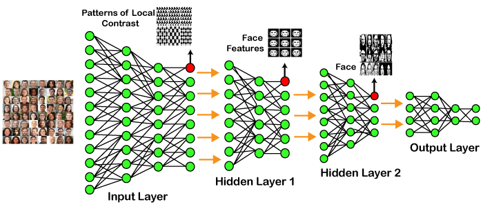

SVREC Technologies
SVREC TechnologiesDeep-Learning

Deep learning is based on the branch of machine learning, which is a subset of artificial intelligence. Since neural networks imitate the human brain and so deep learning will do. In deep learning, nothing is programmed explicitly. Basically, it is a machine learning class that makes use of numerous nonlinear processing units so as to perform feature extraction as well as transformation. The output from each preceding layer is taken as input by each one of the successive layers.
Deep learning models are capable enough to focus on the accurate features themselves by requiring a little guidance from the programmer and are very helpful in solving out the problem of dimensionality. Deep learning algorithms are used, especially when we have a huge no of inputs and outputs.
Since deep learning has been evolved by the machine learning, which itself is a subset of artificial intelligence and as the idea behind the artificial intelligence is to mimic the human behavior, so same is "the idea of deep learning to build such algorithm that can mimic the brain".
Deep learning is implemented with the help of Neural Networks, and the idea behind the motivation of Neural Network is the biological neurons, which is nothing but a brain cell.
"Deep learning is a collection of statistical techniques of machine learning for learning feature hierarchies that are actually based on artificial neural networks."
So basically, deep learning is implemented by the help of deep networks, which are nothing but neural networks with multiple hidden layers.
Example of Deep Learning

In the example given above, we provide the raw data of images to the first layer of the input layer. After then, these input layer will determine the patterns of local contrast that means it will differentiate on the basis of colors, luminosity, etc. Then the 1st hidden layer will determine the face feature, i.e., it will fixate on eyes, nose, and lips, etc. And then, it will fixate those face features on the correct face template. So, in the 2nd hidden layer, it will actually determine the correct face here as it can be seen in the above image, after which it will be sent to the output layer. Likewise, more hidden layers can be added to solve more complex problems, for example, if you want to find out a particular kind of face having large or light complexions. So, as and when the hidden layers increase, we are able to solve complex problems.
Architectures
Deep Neural Networks:
It is a neural network that incorporates the complexity of a certain level, which means several numbers of hidden layers are encompassed in between the input and output layers. They are highly proficient on model and process non-linear associations.
Deep Belief Networks:
A deep belief network is a class of Deep Neural Network that comprises of multi-layer belief networks.
Steps to perform DBN:
1.With the help of the Contrastive Divergence algorithm, a layer of features is learned from perceptible units.
2.Next, the formerly trained features are treated as visible units, which perform learning of features.
3.Lastly, when the learning of the final hidden layer is accomplished, then the whole DBN is trained.
Recurrent Neural Networks:
It permits parallel as well as sequential computation, and it is exactly similar to that of the human brain (large feedback network of connected neurons). Since they are capable enough to reminisce all of the imperative things related to the input they have received, so they are more precise.
Types of Deep Learning Networks

1. Feed Forward Neural Network
A feed-forward neural network is none other than an Artificial Neural Network, which ensures that the nodes do not form a cycle. In this kind of neural network, all the perceptrons are organized within layers, such that the input layer takes the input, and the output layer generates the output. Since the hidden layers do not link with the outside world, it is named as hidden layers. Each of the perceptrons contained in one single layer is associated with each node in the subsequent layer. It can be concluded that all of the nodes are fully connected. It does not contain any visible or invisible connection between the nodes in the same layer. There are no back-loops in the feed-forward network. To minimize the prediction error, the backpropagation algorithm can be used to update the weight values.
Applications:
Data Compression
Pattern Recognition
Computer Vision
Sonar Target Recognition
Speech Recognition
Handwritten Characters Recognition
2. Recurrent Neural Network
Recurrent neural networks are yet another variation of feed-forward networks. Here each of the neurons present in the hidden layers receives an input with a specific delay in time. The Recurrent neural network mainly accesses the preceding info of existing iterations. For example, to guess the succeeding word in any sentence, one must have knowledge about the words that were previously used. It not only processes the inputs but also shares the length as well as weights crossways time. It does not let the size of the model to increase with the increase in the input size. However, the only problem with this recurrent neural network is that it has slow computational speed as well as it does not contemplate any future input for the current state. It has a problem with reminiscing prior information.
Applications
Machine Translation
Robot Control
Time Series Prediction
Speech Recognition
Speech Synthesis
Time Series Anomaly Detection
Rhythm Learning
Music Composition
3. Convolutional Neural Network
Convolutional Neural Networks are a special kind of neural network mainly used for image classification, clustering of images and object recognition. DNNs enable unsupervised construction of hierarchical image representations. To achieve the best accuracy, deep convolutional neural networks are preferred more than any other neural network.
Applications
Identify Faces, Street Signs, Tumors.
Image Recognition.
Video Analysis.
NLP.
Anomaly Detection.
Drug Discovery.
Checkers Game.
Time Series Forecasting
4. Restricted Boltzmann Machine
RBMs are yet another variant of Boltzmann Machines. Here the neurons present in the input layer and the hidden layer encompasses symmetric connections amid them. However, there is no internal association within the respective layer. But in contrast to RBM, Boltzmann machines do encompass internal connections inside the hidden layer. These restrictions in BMs helps the model to train efficiently.
Applications
Filtering.
Feature Learning.
Classification.
Risk Detection.
Business and Economic analysis.
5. Autoencoders
An autoencoder neural network is another kind of unsupervised machine learning algorithm. Here the number of hidden cells is merely small than that of the input cells. But the number of input cells is equivalent to the number of output cells. An autoencoder network is trained to display the output similar to the fed input to force AEs to find common patterns and generalize the data. The autoencoders are mainly used for the smaller representation of the input. It helps in the reconstruction of the original data from compressed data. This algorithm is comparatively simple as it only necessitates the output identical to the input.
Encoder: Convert input data in lower dimensions.
Decoder: Reconstruct the compressed data.
Applications
Classification.
Clustering.
Feature Compression.
Deep learning applications
Self-Driving Cars
In self-driven cars, it is able to capture the images around it by processing a huge amount of data, and then it will decide which actions should be incorporated to take a left or right or should it stop. So, accordingly, it will decide what actions it should take, which will further reduce the accidents that happen every year.
Voice Controlled Assistance
When we talk about voice control assistance, then Siri is the one thing that comes into our mind. So, you can tell Siri whatever you want it to do it for you, and it will search it for you and display it for you.
Automatic Image Caption Generation
Whatever image that you upload, the algorithm will work in such a way that it will generate caption accordingly. If you say blue colored eye, it will display a blue-colored eye with a caption at the bottom of the image.